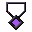

Gear & forge
Amulets
The three amulet slots, how amulets work, and every amulet with its stats and skill.
The amulet slots
Amulets go in the three slots in the right-hand column of your main inventory (the last slot of each of the three inventory rows, not the hotbar). The resource pack draws a pendant outline in those slots, so you can see where they are. An amulet anywhere else in your bags does nothing.

In an amulet slot, an amulet works like a worn piece of gear:
- Its stats are added to yours as bonus levels (aqua on the sheet). Negative stats count too.
- Its passive runs while it's in the slot.
- If it has an active skill, that skill joins your ability pool. Put it on any key from your class page (see abilities). It costs no mana and uses the amulet's own cooldown. Take the amulet off and it leaves the pool.
- It counts toward a set if it belongs to one.
- Like all gear it has an item level and does nothing until your character level reaches it (see gear).
- The Bonuses page of your journal lists your amulets with their stats and passives.
The amulets
| Amulet | Rarity | Stats | Skill |
|---|---|---|---|
| Warrior's Boon | Rare | +3 Vitality, +3 Might | Warrior's Boon (Warriors only): every hit you take gives +1 armour. Stacks 5 times and fades 5s after the last hit. |
| Eagle Eye | Uncommon | +2 Precision, +2 Swiftness | Eagle Eye (Archers only): while drawing a bow in mid-air you glide down very slowly (up to 3s per jump). |
| Thief's Gold | Mythic | +5 Swiftness, +5 Fortune | Thief's Gold (Rogues only): press Sneak in mid-air to double jump. |
| Forbidden Amulet | Mythic | +10 Arcana, -5 Fortitude, -5 Vitality | Forbidden Knowledge (Mages only): every Arcana ratio on your abilities gets +5 points (40% Arcana counts as 45%). |
| Henrietta's Golden Egg | Uncommon | +4 Fortune | Henrietta's Prophecy (active, 60s cooldown): she clucks, and one of six things comes true. One of them is nothing. |
| Sister Maud's Rosary | Uncommon | +3 Fortune | Maud's Luck: Luck I while worn. |
| A Link of His Chain | Uncommon | - | It does nothing. You kept it anyway. |
The four class amulets give their stats to anyone, but their skill only works for the class named.
Where amulets come from
Amulets are never part of ordinary monster loot:
- The four class amulets (Warrior's Boon, Eagle Eye, Thief's Gold, the Forbidden Amulet) drop from one of the bosses.
- Henrietta's Golden Egg and Sister Maud's Rosary are rewards from encounters and quests out in the world.
- A Link of His Chain also comes from a boss.